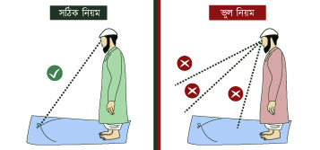
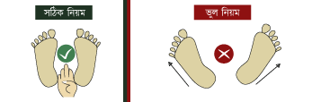
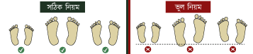
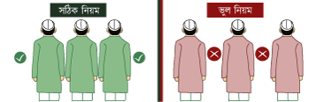
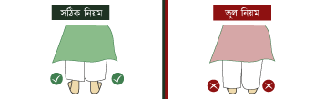

নামাজে দাঁড়ানোর নিয়ম
নামাজে সর্বদা কিবলামুখী হয়ে দাঁড়াবে। এদিক-ওদিক তাঁকাবে না।
দাঁড়ানো অবস্থায় নজর সিজদার স্থানের দিকে রাখতে হবে। মাথা কিঞ্চিত ঝুঁকিয়ে রাখতে হবে কিন্তু থুতনি যেন বুকের সাথে লেগে না যায়, ইহা মাকরূহ। নামাজের নিয়্যত বাঁধার পূর্ব পর্যন্ত দুই হাত শরীরের দুই পার্শ্বে ছেড়ে রাখবে।

পা এবং পায়ের আঙ্গুল কিবলামুখী রাখতে হবে। দুই পা দুই দিকে করে রাখা যাবে না, বরং দুই পা সোজা সামনের দিকে কিবলা বরাবর রেখে আদবের সাথে দাঁড়াতে হবে।
দুই পায়ের মাঝখানে অন্তত চার আঙুল পরিমাণ ফাঁকা জায়গা রাখতে হবে। পায়ের সামনে ও পিছনের ফাঁকের পরিমাণ সমান হবে, অর্থাৎ পা সোজা রাখতে হবে।

জামায়াতে নামাজ পড়ার সময় কাতার সোজা রাখা জরুরি। কাতার সোজা রাখার জন্য প্রত্যেক মুসল্লী তাদের পায়ের গোড়ালির শেষ মাথা এক বরাবরে রেখে দাঁড়াবে। সামনে পিছনে আঁকাবাঁকা অবস্থায় দাঁড়াবে না।

জামায়াতে নামাজ আদায় করার সময় মুসল্লীগণ নিজেদের মধ্যে ফাঁকা জায়গা রাখবে না। বরং যথাসম্ভব কাছাকাছি গায়ে গা লাগিয়ে দাঁড়াবে।

পায়জামা বা লুঙ্গি অর্থাৎ পরিধেয় বস্ত্র অবশ্যই টাখনুর উপরে রাখবে। টাখনু ঢেকে কাপড় পরিধান করা পুরুষের জন্য গোনাহের বিষয় এবং এই অবস্থায় নামাজ সহীহ হবে না।

যে ধরণের পোশাক পরিধান করে জনসম্মুখে যাওয়া লজ্জাজনক বোধ হয়, সে ধরণের কাপড় পরিধান করে নামাজ পড়া মাকরূহ।
জামার আস্তিন লম্বা হওয়া উত্তম। আস্তিন গুটিয়ে নামাজ আদায় করা আদবের খেলাফ এবং মাকরূহ।